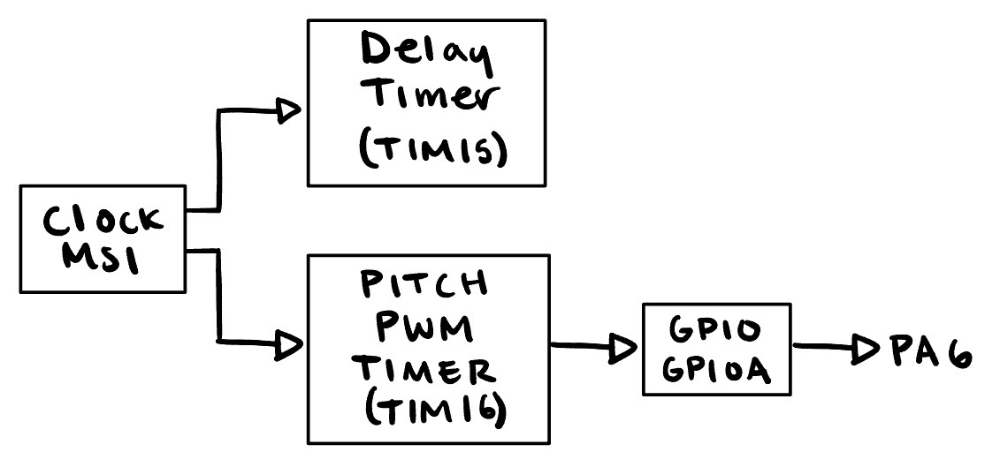
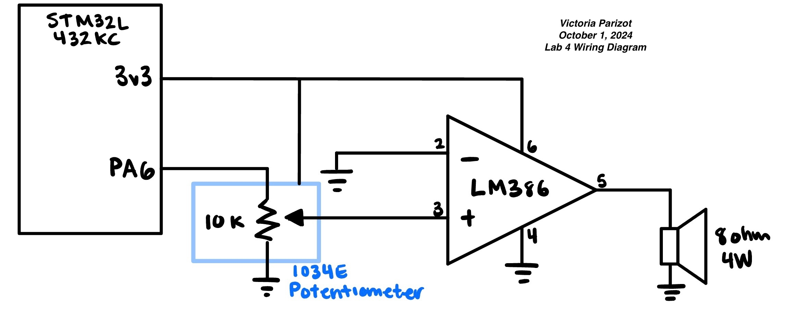

Lab 4: Digital Audio
Introduction & Learning Objectives
In lab 4 I used an MCU to play music by using timers to generate square waves by toggling a GPIO pin at a specific frequency for specified durations.
To build a system to play music, I used an LM386 audio amplifier, and an 8-ohm speaker. The MCU read a list of notes and generated a corresponding sequence of square waves. For this lab, we were NOT allowed to use CMSIS headers, forcing us to define our own structs to better understand the MCU registers and better familiarize ourselves with reading the Reference manual.
This lab had the following learning objectives:
- Built a circuit to enable an I/O pin from your MCU to drive a speaker
- Implemented the timer functionality available on the MCU by reading the datasheet and writing your own library in C from scratch
The source code for the project can be found in the associated Github repository.
MCU Design
The MCU read a list of notes specifying pitch (in Hz) and duration (in ms) and generated a corresponding sequence of square waves. To implement this, I used the built-in MSI clock to initialize two timers: Timer 15 to handle duration of each note and Timer 16 to use Pulse Width Modulation (PWM) capabilities to generate the desired pitch. These timers would work together to generate desired square waves out of PA6. This approach is outlined in the image below.

MSI Clock
I set the MSI Clock at it’s default frequency of 4 Mhz. The clock’s output frequency can be calculated with: \(Output freq = (srcclk) * (N/M) / R\)
I set N = 16, M = 1 and R = 16, to abide by N, M, R constraints.
The Clock set up was dealt with in my RCC files.
Delay Timer (TIM 15)
Timer 15 was used as the delay timer, and initialized with the initTIMdelay(TIM_TypeDef15 * TIMx). As the delay timer would ultimately read in ms, I opted to scale down my clock from 4Mhz to 100 kHz. This was done by setting the prescaler to 39.
\(Timer freq = \frac{clkfreq}{PSC + 1} = \frac{4 MHz}{40} = 100 kHz\)
To use the delay timer, I implemented a delay_millis function, that took in a pointer to the Timer to use and an integers of the ms to delay for. The function utilized the ARR register, CNT register, and SR register to wait for x ms.
The Auto Reload Register (ARR) represents the maximum value that a timer can count to, where the count is incremented at the Timer frequency. Since our TIM15 frequency is 100 kHz, then the CNT register increments by 100 every millisecond. Therefore, the ARR was set to \(100*ms_{desired}\). The Counter (CNT) and Capture/Compare 1 (SR) were reset.
Once the ARR is reached, the Status Register (SR) will change from 0 to 1. Thus, I implemented a while loop that waited until the flag was reached.
To understand the limitations of the delay function, we can calculate the maximum and minimum durations supported.
Maximum Delay Supported
The ARR is a 16 bit number, meaning the maximum value of \(ARR = 2^{16} - 1\) Given the relationship that \(ARR = 100*ms_{desired}\), the maximum wait time is \(\frac{2^{16} - 1}{100} = 655.35ms\)
If I wanted to delay for longer, I could call the delay function multiple times, reset the counter during the loop, or further slow the clock.
Minimum Delay Supported
The minimum value of \(ARR = 1\), doing similair calculations as before,
\(\frac{ARR}{100} = \frac{1}{100} = 0.01ms\)
we see that the minimum delay supported is 0.01ms.
Pulse Width Modulation (PWM) Timer (TIM 16)
Timer 16 was set up with PWM capabilities to generate square waves representing the frequency of each note. TIM16 was initialied with the initTIMpwm() funtion, that set TIM16 count frequency to 100 kHz with a prescaler of 39, and the PWM duty cyle to 50%. For each note, the desired frequency was passed into a pitch function, which set ARR based on desired frequency, and recalculated for a 50% duty cylce, and triggered an update event. The ARR was calculated as: \(ARR = \frac{100 kHz}{desired_{pitch}}\)
We can validate our choice by ensuring that individual pitches are accurate to within 1% across the frequency range of 220-1000 Hz:
Percent Error at 220 Hz
\(\% error = 100*\frac{{|calculated - actual|}}{actual}\)
\(ARR = \frac{100 kHz}{pitch_{desired}} = \frac{100000}{220} = 454.54\)
The ARR would round this to 455, as it counts in integers $calculated = 100 kHz/ 455 = 219.78
\(\% error = 100*\frac{|219.78 - 220|}{220} = 0.1\%\)
Percent Error at 1000 Hz
\(\% error = 100*\frac{{|calculated - actual|}}{actual}\)
\(ARR = \frac{100 kHz}{pitch_{desired}} = \frac{100000}{1000} = 100\)
This is an integer value, meanining that no casting would occur, and the frequency would be very precise.
We can also calulate the maximum and minimum frequencies supported:
Minimum Frequency Supported
The ARR is a 16 bit number, meaning the maximum value of \(ARR_{max} = 2^{16} - 1\). Given the relationship that \(ARR = \frac{100 kHz}{desired_{pitch}}\), the minimum frequncy supported is
\(min_{pitch} = \frac{100 kHz}{ARR} = \frac{100 kHz}{2^{16} - 1}\) \(min_{pitch} = 1.5259 Hz\)
Maximum Frequency Supported
The maximum value of \(ARR = 1\), doing similair calculations as before, \(max_{pitch} = \frac{100 kHz}{ARR} = \frac{100 kHz}{1}\) = 100 kHz \(max_{pitch} = 100 kHz\)
GPIO (GPIOA)
To interface with the frequency that we were generating, I used an alternate function pun. From page 57 on the datasheet, TIM16 correlates to PA6. PA6 was set to an alternate function using pinMode.
Hardware Design
An LM386 audio amplifier [LM386 Datasheet] was used to interface MCU pin PA6 with an 8 Ohm speaker.

Testing & Debugging
This lab looked a lot at generating signals at desired frequencies and durations. As a result, the oscilloscope was incredible important in ensuring that clock scaling and timer frequencies were as desired.
Demonstration
My lab played Für Elise from provided starter code at the desired pitch and tempo.
I also tranposed one of the best songs ever to play on my speaker as well:
Conclusion
Lab 4 provided an introduction into MCU clock and timers. I grew comfortable with reading the 1600 page datasheet, a task that had previously felt daunting.
Lab 4 meets all the requirements, and took me approximately 24 hours to complete.